CODING AGENTS AS PIXEL WORLD MODELS
traex/DeepSeek-V4.1-Flash · 0018
点击播放 · 原生 RGB 像素
逐轮保存的候选
回放视频、检查图与代码变化。
每份候选均可单独播放。实际图片检查记录在下方工具轨迹中。
候选 01播放与检查图
点击播放 · 原生 RGB 像素
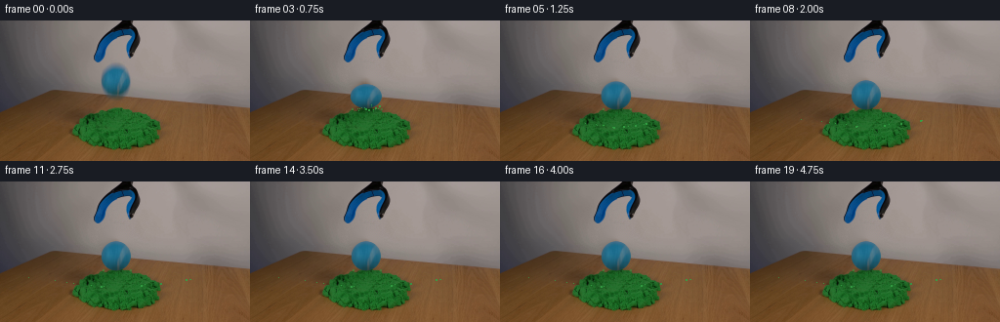
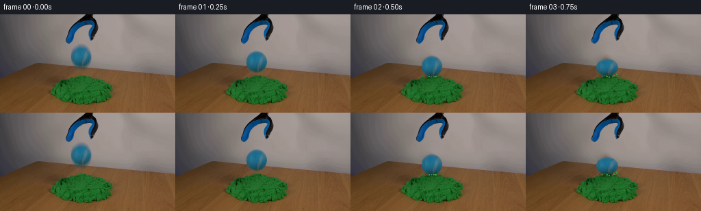
展开代码变化
--- 上一保存版本
+++ 本次保存版本
@@ -0,0 +1,224 @@
+"""Generate a short, fixed-camera kinetic-sand impact sequence."""
+
+from pathlib import Path
+
+import cv2
+import numpy as np
+
+import artifact_io
+
+
+ROOT = Path(__file__).resolve().parent
+FRAME_COUNT = 20
+WIDTH = 256
+HEIGHT = 144
+FPS = 4
+
+# Source-space geometry, measured from first_frame.png.
+BALL_X = 118.4
+BALL_Y = 61.2
+BALL_RX = 15.1
+BALL_RY = 15.5
+PILE_X = 119.0
+PILE_TOP = 89.0
+
+
+def smoothstep(edge0, edge1, x):
+ t = np.clip((x - edge0) / (edge1 - edge0), 0.0, 1.0)
+ return t * t * (3.0 - 2.0 * t)
+
+
+def make_clean_plate(source):
+ """Remove the source ball while retaining the lightly textured wall."""
+ mask = np.zeros((HEIGHT, WIDTH), np.uint8)
+ cv2.ellipse(mask, (round(BALL_X), round(BALL_Y)), (18, 18), 0, 0, 360, 255, -1)
+ clean = cv2.inpaint(source, mask, 7, cv2.INPAINT_TELEA)
+
+ # The telea fill is slightly too smooth at this tiny scale. Put back a very
+ # low-amplitude wall grain outside the actual repaired disk.
+ rng = np.random.default_rng(17)
+ noise = rng.normal(0.0, 1.35, (HEIGHT, WIDTH, 1))
+ wall = np.zeros((HEIGHT, WIDTH), np.float32)
+ cv2.ellipse(wall, (round(BALL_X), round(BALL_Y)), (25, 24), 0, 0, 360, 1.0, -1)
+ wall = cv2.GaussianBlur(wall, (0, 0), 4.0)
+ wall *= smoothstep(12.0, 24.0, np.hypot(
+ np.arange(WIDTH)[None, :] - BALL_X,
+ np.arange(HEIGHT)[:, None] - BALL_Y,
+ ))
+ clean = np.clip(clean.astype(np.float32) + noise * wall[:, :, None], 0, 255)
+ return clean.astype(np.uint8)
+
+
+def trajectory(frame_index):
+ """Return center, radii, shutter travel, and impact energy for one frame."""
+ table = {
+ 0: (BALL_Y, BALL_RX, BALL_RY, 0.0, 0.00),
+ 1: (69.0, 15.2, 15.5, 2.8, 0.10),
+ 2: (75.7, 15.3, 15.2, 2.2, 0.62),
+ 3: (77.1, 16.2, 12.6, 0.0, 1.00),
+ 4: (73.7, 15.4, 14.3, 1.3, 0.46),
+ 5: (76.3, 15.5, 14.6, 0.7, 0.28),
+ 6: (75.7, 15.2, 15.2, 0.0, 0.18),
+ }
+ if frame_index in table:
+ return table[frame_index]
+ return (75.8, 15.2, 15.2, 0.0, 0.18)
+
+
+def render_ball(background, source, center_y, rx, ry, shutter_travel, impact):
+ """Composite a source-textured sphere with sub-frame motion blur."""
+ yy, xx = np.mgrid[0:HEIGHT, 0:WIDTH].astype(np.float32)
+ samples = 5 if shutter_travel > 0.2 else 1
+ weights = np.array([1, 2, 3, 2, 1], np.float32) if samples == 5 else np.ones(1, np.float32)
+ weights /= weights.sum()
+
+ accumulated_rgb = np.zeros((HEIGHT, WIDTH, 3), np.float32)
+ accumulated_alpha = np.zeros((HEIGHT, WIDTH), np.float32)
+
+ for sample, weight in zip(range(samples), weights):
+ if samples > 1:
+ fraction = sample / (samples - 1) - 0.5
+ else:
+ fraction = 0.0
+ cy = center_y + fraction * shutter_travel
+ u = (xx - BALL_X) / rx
+ v = (yy - cy) / ry
+ radius = np.sqrt(u * u + v * v)
+
+ # Feather the silhouette without carrying the original gray wall into
+ # the moving sprite. Edge samples are pulled gently toward the interior.
+ edge_pull = 1.0 - 0.10 * smoothstep(0.64, 0.98, radius)
+ map_x = BALL_X + u * BALL_RX * edge_pull
+ map_y = BALL_Y + v * BALL_RY * edge_pull
+ texture = cv2.remap(
+ source,
+ map_x,
+ map_y,
+ interpolation=cv2.INTER_LINEAR,
+ borderMode=cv2.BORDER_REFLECT_101,
+ ).astype(np.float32)
+
+ alpha = 1.0 - smoothstep(0.955, 1.025, radius)
+ # A darker lower hemisphere keeps the sphere seated in the scene.
+ lower = smoothstep(-0.25, 1.0, v)
+ texture *= (1.0 - 0.07 * lower)[:, :, None]
+ accumulated_rgb += texture * alpha[:, :, None] * weight
+ accumulated_alpha += alpha * weight
+
+ alpha = np.clip(accumulated_alpha, 0.0, 1.0)
+ rgb = accumulated_rgb / np.maximum(accumulated_alpha[:, :, None], 1e-5)
+
+ # Short contact shadow. It grows in strength only as the ball approaches.
+ shadow = np.zeros((HEIGHT, WIDTH), np.float32)
+ shadow_y = PILE_TOP + 1.3
+ shadow_x_radius = 14.5 + 2.5 * impact
+ shadow_y_radius = 2.5 + 1.3 * impact
+ distance = ((xx - BALL_X) / shadow_x_radius) ** 2 + ((yy - shadow_y) / shadow_y_radius) ** 2
+ shadow = np.exp(-1.8 * distance) * (0.07 + 0.20 * impact)
+ shadow *= smoothstep(76.0, 82.0, yy)
+ shaded = background.astype(np.float32)
+ shaded *= (1.0 - shadow[:, :, None])
+
+ result = shaded * (1.0 - alpha[:, :, None]) + rgb * alpha[:, :, None]
+ return np.clip(result, 0, 255).astype(np.uint8)
+
+
+def add_crater(frame, source, impact, frame_index):
+ """Add a restrained compressed rim and contact shadow in the pile."""
+ if impact < 0.16:
+ return frame
+
+ yy, xx = np.mgrid[0:HEIGHT, 0:WIDTH].astype(np.float32)
+ dx = (xx - PILE_X) / 15.0
+ dy = (yy - 90.5) / 4.5
+ core = np.exp(-(dx * dx + dy * dy) * 1.6)
+
+ # A shallow dark contact line reads more clearly at this resolution than
+ # an exaggerated geometric hole.
+ dark = core * (0.07 + 0.13 * impact)
+ dark *= (yy >= 86.0)
+ green = (
+ (yy >= 82)
+ & (yy <= 105)
+ & (xx >= 96)
+ & (xx <= 142)
+ )
+ image = frame.astype(np.float32)
+ image[green] *= (1.0 - dark[green, None])
+
+ # Tiny disturbed shoulders at either side of the resting ball.
+ if frame_index >= 2:
+ for side, strength in [(-1.0, 0.55), (1.0, 0.45)]:
+ cx = int(round(PILE_X + side * (14.0 + impact)))
+ cy = 90
+ color = np.array([47, 157, 65], np.float32)
+ overlay = np.zeros_like(image)
+ overlay[cy:cy + 2, cx:cx + 2] = color
+ alpha = np.zeros((HEIGHT, WIDTH), np.float32)
+ alpha[cy:cy + 2, cx:cx + 2] = strength
+ image = image * (1.0 - alpha[:, :, None]) + overlay * alpha[:, :, None]
+ return np.clip(image, 0, 255).astype(np.uint8)
+
+
+def add_grains(frame, frame_index):
+ """Scatter a few clumped sand grains after impact."""
+ if frame_index < 2:
+ return frame
+
+ rng = np.random.default_rng(203)
+ count = 13
+ angles = rng.uniform(-2.95, -0.18, count)
+ speeds = rng.uniform(20.0, 52.0, count)
+ lifts = rng.uniform(24.0, 62.0, count)
+ life = np.clip((frame_index - 2) / FPS, 0.0, 2.0)
+
+ image = frame.astype(np.float32)
+ for i, angle in enumerate(angles):
+ speed = speeds[i]
+ vx = np.cos(angle) * speed
+ vy = np.sin(angle) * speed
+ x = PILE_X + rng.uniform(-5.0, 5.0) + vx * life
+ y = 90.0 + vy * life + 0.5 * 185.0 * life * life
+ if y > 109.0:
+ y = 109.0 - 0.12 * abs(x - PILE_X)
+
+ x_i = int(round(x))
+ y_i = int(round(y))
+ if not (1 <= x_i < WIDTH - 1 and 1 <= y_i < HEIGHT - 1):
+ continue
+ if y_i < 86 and frame_index < 5:
+ continue
+
+ green = np.array([52, 163 + rng.integers(-8, 12), 69], np.float32)
+ size = 1 if i % 4 else 2
+ alpha = 0.78 if size == 1 else 0.88
+ image[y_i:y_i + size, x_i:x_i + size] = (
+ image[y_i:y_i + size, x_i:x_i + size] * (1.0 - alpha) + green * alpha
+ )
+ if life < 0.32 and i % 3 == 0:
+ streak_y = y_i + 1
+ image[streak_y:streak_y + 2, x_i] = image[streak_y:streak_y + 2, x_i] * 0.68 + green * 0.32
+ return np.clip(image, 0, 255).astype(np.uint8)
+
+
+def generate():
+ source = cv2.imread(str(ROOT / "first_frame.png"), cv2.IMREAD_COLOR)
+ if source is None:
+ raise FileNotFoundError(ROOT / "first_frame.png")
+ source = cv2.cvtColor(source, cv2.COLOR_BGR2RGB)
+ clean = make_clean_plate(source)
+
+ frames = np.empty((FRAME_COUNT, HEIGHT, WIDTH, 3), np.uint8)
+ frames[0] = source
+ for index in range(1, FRAME_COUNT):
+ cy, rx, ry, travel, impact = trajectory(index)
+ frame = render_ball(clean, source, cy, rx, ry, travel, impact)
+ frame = add_crater(frame, source, impact, index)
+ frame = add_grains(frame, index)
+ frames[index] = frame
+
+ artifact_io.save(frames, ROOT)
+
+
+if __name__ == "__main__":
+ generate()
可观测工具轨迹
实际执行的命令与返回图片。
命令 1exit 0
/bin/bash -c "pwd && rg --files -g '"'!*.mp4'"' -g '"'!*.mov'"' -g '"'!*.avi'"' | sed -n '1,200p'"
命令 2exit 0
/bin/bash -c "sed -n '1,240p' prompt.txt"
命令 3exit 0
/bin/bash -c "sed -n '1,280p' GENERATION_RULES.md"
命令 4exit 0
/bin/bash -c 'file first_frame.png && identify first_frame.png 2>/dev/null || true && ls -la'
命令 5exit 0
/bin/bash -c "sed -n '1,240p' artifact_io.py"
命令 6exit 0
/bin/bash -c "sed -n '1,220p' player_template.html"
命令 7exit 0
/bin/bash -c "python - <<'PY'
mods=['numpy','PIL','cv2','scipy','imageio','skimage']
for m in mods:
try:
mod=__import__(m)
print(m, getattr(mod,'__version__','ok'))
except Exception as e:
print(m, 'MISSING', e)
PY
command -v ffmpeg || true"命令 8exit 0
/bin/bash -c "python - <<'PY'
from PIL import Image
im=Image.open('first_frame.png').convert('RGB')
print(im.size)
for name,box in [('ball',(88,44,153,108)),('sand',(62,78,196,142)),('gripper',(85,0,160,50)),('table',(0,60,256,144))]:
im.crop(box).resize(((box[2]-box[0])*4,(box[3]-box[1])*4),Image.Resampling.NEAREST).save('.tmp/'+name+'.png')
PY"命令 9exit 0
/bin/bash -c "python - <<'PY'
import cv2, numpy as np
im=cv2.imread('first_frame.png')
hsv=cv2.cvtColor(im,cv2.COLOR_BGR2HSV)
# inspect HSV at selected points
for p in [(120,70),(120,55),(105,70),(135,70),(120,88),(100,100),(30,100),(120,20),(100,45)]:
x,y=p
print(p,'bgr',im[y,x], 'hsv', hsv[y,x])
# blue mask roi and comps
roi=hsv[35:100,80:160]
mask=((roi[:,:,0]>85)&(roi[:,:,0]<125)&(roi[:,:,1]>65)&(roi[:,:,2]>45)).astype(np.uint8)
n,lab,stats,cents=cv2.connectedComponentsWithStats(mask)
print('components',sorted([(int(s[4]),tuple(map(float,c))) for s,c in zip(stats[1:],cents[1:])],reverse=True)[:8])
PY"命令 10exit 0
/bin/bash -c "python - <<'PY'
from PIL import Image
im=Image.open('first_frame.png').convert('RGB')
# make 3x nearest crop around whole action
im.crop((55,0,200,144)).resize((580,576),Image.Resampling.NEAREST).save('.tmp/action_nearest.png')
im.crop((55,0,200,144)).resize((580,576),Image.Resampling.LANCZOS).save('.tmp/action_smooth.png')
PY"命令 11exit 0
/bin/bash -c "python - <<'PY'
import cv2,numpy as np
im=cv2.imread('first_frame.png'); hsv=cv2.cvtColor(im,cv2.COLOR_BGR2HSV)
# green sand mask
m=((hsv[:,:,0]>40)&(hsv[:,:,0]<85)&(hsv[:,:,1]>80)&(hsv[:,:,2]>35)).astype(np.uint8)
n,lab,stats,cents=cv2.connectedComponentsWithStats(m)
print(sorted([(int(s[4]),tuple(s[:4]),tuple(np.round(c,2))) for s,c in zip(stats[1:],cents[1:])],reverse=True)[:5])
# per-column top green in x 60-195
ys,xs=np.where(m)
for x in range(60,196,10):
yy=ys[(xs>=x-2)&(xs<=x+2)]
print(x, yy.min() if len(yy) else None, yy.max() if len(yy) else None)
# ball segmentation rough
bm=((hsv[:,:,0]>90)&(hsv[:,:,0]<115)&(hsv[:,:,1]>70)&(hsv[:,:,2]>60)).astype(np.uint8)
# only y35:100 x90:155
b=np.zeros_like(bm); b[35:100,90:155]=bm[35:100,90:155]
n,lab,stats,cents=cv2.connectedComponentsWithStats(b)
print('blue',sorted([(int(s[4]),tuple(s[:4]),tuple(np.round(c,2))) for s,c in zip(stats[1:],cents[1:])],reverse=True)[:5])
PY"命令 12exit 0
/bin/bash -c "python - <<'PY'
import cv2, numpy as np
from PIL import Image
im=cv2.imread('first_frame.png')
h,w=im.shape[:2]
mask=np.zeros((h,w),np.uint8)
cv2.ellipse(mask,(119,61),(17,16),0,0,360,255,-1)
# expand 1 px
mask=cv2.dilate(mask,np.ones((3,3),np.uint8),iterations=1)
for method,name,r in [(cv2.INPAINT_TELEA,'telea',7),(cv2.INPAINT_NS,'ns',7),(cv2.INPAINT_TELEA,'telea3',3)]:
out=cv2.inpaint(im,mask,r,method)
cv2.imwrite('.tmp/base_'+name+'.png',out)
PY"命令 13exit 0
/bin/bash -c "python - <<'PY'
from PIL import Image
for name in ['base_telea','base_ns','base_telea3']:
im=Image.open('.tmp/'+name+'.png')
im.crop((85,30,155,95)).resize((350,325),Image.Resampling.NEAREST).save('.tmp/'+name+'_crop.png')
PY"命令 14exit 0
/bin/bash -c "python - <<'PY'
from PIL import Image
im=Image.open('first_frame.png').convert('RGB')
# samples and gradients in ball
import numpy as np
a=np.array(im)
for y in [47,50,54,58,62,66,70,74]:
print(y, [(x,tuple(a[y,x])) for x in [106,110,114,118,122,126,130]])
PY"命令 15exit 0
/bin/bash -c 'python generate.py'
命令 16exit 0
/bin/bash -c "python - <<'PY'
from PIL import Image, ImageDraw
ims=[Image.open(f'frames/{i:02d}.png').convert('RGB') for i in range(20)]
# contact animation: frames 1-10 at 4x
sheet=Image.new('RGB',(256*5, (144+18)*2),(24,27,33)); d=ImageDraw.Draw(sheet)
for j,i in enumerate(list(range(0,10))):
x=(j%5)*256; y=(j//5)*162
d.text((x+4,y+2),f'frame {i:02d}',fill='white')
sheet.paste(ims[i].resize((256*2,144*2),Image.Resampling.NEAREST),(x,y+18)) if False else None
# simpler each 2x, 5 cols 2 rows
sheet=Image.new('RGB',(512*5, (288+18)*2),(24,27,33)); d=ImageDraw.Draw(sheet)
for j,i in enumerate(list(range(0,10))):
x=(j%5)*512; y=(j//5)*306
d.text((x+4,y+2),f'frame {i:02d}',fill='white')
sheet.paste(ims[i].resize((512,288),Image.Resampling.NEAREST),(x,y+18))
sheet.save('.tmp/contact_sheet.png')
# gif full frames
ims[0].save('.tmp/anim.gif',save_all=True,append_images=ims[1:],duration=250,loop=0)
PY"命令 17exit 0
/bin/bash -c "python - <<'PY'
from PIL import Image
import numpy as np
for i in range(10):
a=np.array(Image.open(f'frames/{i:02d}.png').convert('RGB'))
if i:
prev=np.array(Image.open(f'frames/{i-1:02d}.png').convert('RGB'))
diff=np.abs(a.astype(int)-prev.astype(int)).max(2)
print(i, 'changed', int((diff>0).sum()), 'mean',round(float(np.abs(a.astype(int)-prev.astype(int)).mean()),2),'bbox', (np.where(diff>0)[1].min(),np.where(diff>0)[0].min(),np.where(diff>0)[1].max(),np.where(diff>0)[0].max()))
print('frame0 identical',np.array_equal(np.array(Image.open('first_frame.png').convert('RGB')),np.array(Image.open('frames/00.png').convert('RGB'))))
PY"命令 18exit 0
/bin/bash -c "python - <<'PY'
from PIL import Image
import numpy as np
src=np.array(Image.open('first_frame.png').convert('RGB'))
a=np.array(Image.open('frames/01.png').convert('RGB'))
for name,im in [('src',src),('f1',a)]:
Image.fromarray(im[30:105,80:160]).resize((640,600),Image.Resampling.NEAREST).save('.tmp/'+name+'_ball.png')
PY"命令 19exit 0
/bin/bash -c 'du -h pixels.npz index.html inspection.png transition_check.png && rg -n "window.__pixelReady|const DATA=" index.html | head'
命令 20exit 0
/bin/bash -c "python -m py_compile generate.py && python - <<'PY'
import numpy as np
from PIL import Image
z=np.load('pixels.npz')['pixels']
print('pixels',z.shape,z.dtype)
a=np.asarray(Image.open('first_frame.png').convert('RGB'))
b=np.asarray(Image.open('frames/00.png').convert('RGB'))
print('frame0_exact',np.array_equal(a,b))
print('frames',len(list(__import__('pathlib').Path('frames').glob('*.png'))))
PY"命令 21exit 0
/bin/bash -c 'sha256sum generate.py pixels.npz frames/00.png first_frame.png'
命令 22exit 0
/bin/bash -c "cp pixels.npz .tmp/pixels_before.npz && python generate.py && cmp -s pixels.npz .tmp/pixels_before.npz && echo deterministic_regeneration_ok && python - <<'PY'
import json,re
from pathlib import Path
text=Path('index.html').read_text()
m=re.search(r'const DATA=(\\{.*?\\}),W=DATA.width',text)
print('player_payload_ok', bool(m))
print('player_payload_bytes', len(m.group(1)) if m else 0)
PY"命令 23exit 0
/bin/bash -c "python - <<'PY'
from pathlib import Path
import numpy as np
from PIL import Image
frames=[np.asarray(Image.open(p).convert('RGB')) for p in sorted(Path('frames').glob('*.png'))]
a=np.stack(frames)
print('shape',a.shape,'dtype',a.dtype)
print('frame0_exact',np.array_equal(a[0],np.asarray(Image.open('first_frame.png').convert('RGB'))))
# every frame retains the fixed plate outside the action envelope
fixed=np.ones((144,256),bool); fixed[20:112,62:174]=False
print('static_plate_mean_abs_diff',float(np.abs(a[:,fixed].astype(np.int16)-a[0,fixed].astype(np.int16)).mean()))
print('max_delta_inside_action',int(np.abs(a.astype(np.int16)-a[0].astype(np.int16)).max()))
PY"命令 24exit 0
/bin/bash -c "find . -maxdepth 2 -type f -not -path './.tmp/*' -printf '%P %s bytes\\n' | sort"
命令 25exit 0
/bin/bash -c 'find __pycache__ -type f -delete && rmdir __pycache__'
命令 26exit 0
/bin/bash -c "python - <<'PY'
import ast
from pathlib import Path
ast.parse(Path('generate.py').read_text())
print('syntax_ok')
PY
test -f index.html && test -f pixels.npz && test -f frames/19.png && echo artifacts_present"视觉工具实际返回图片 1

视觉工具实际返回图片 2
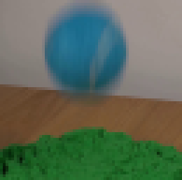
视觉工具实际返回图片 3
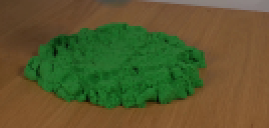
视觉工具实际返回图片 4
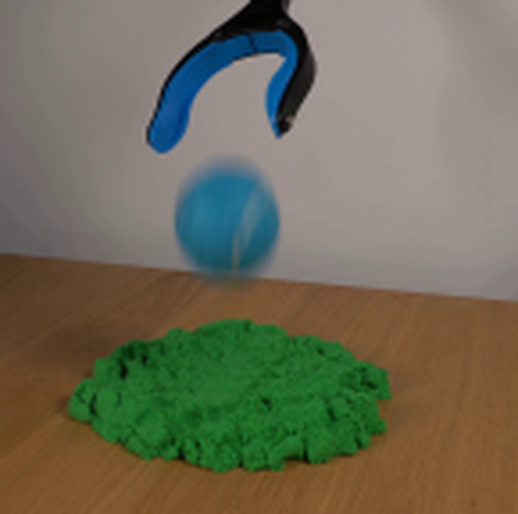
视觉工具实际返回图片 5
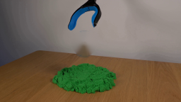
视觉工具实际返回图片 6
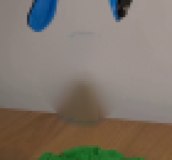
视觉工具实际返回图片 7
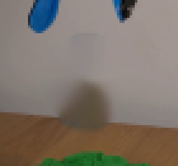
视觉工具实际返回图片 8

视觉工具实际返回图片 9

视觉工具实际返回图片 10
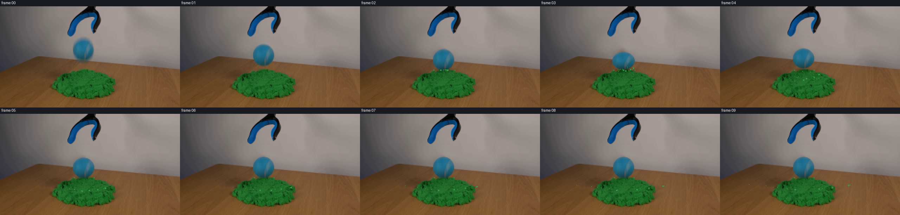
视觉工具实际返回图片 11
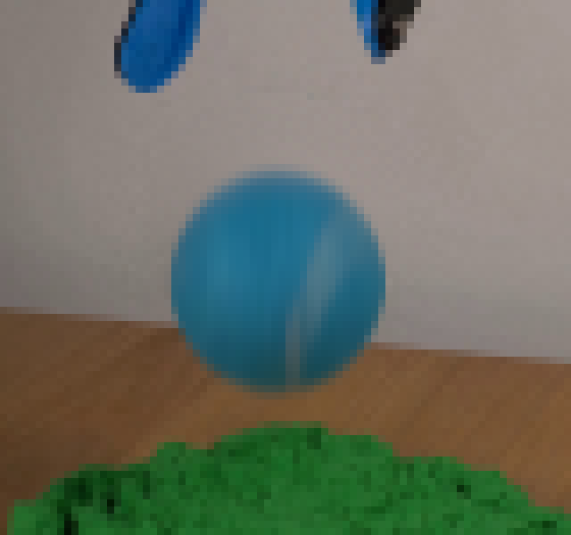
视觉工具实际返回图片 12
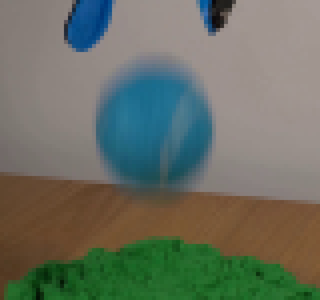
视觉工具实际返回图片 13
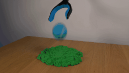
保存候选 1 份；完成命令 26 次；可验证图片返回 13 张。原始 API 响应与完整日志保留在本地。